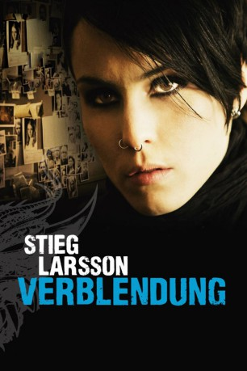
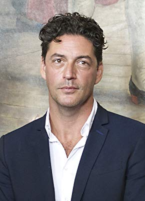

#331 Stieg Larsson Millennium 1 - Verblendung
Alternativ: The Girl with the Dragon Tattoo (Englischer Titel)
Auszeichnungen: 1 BAFTA-Awards gewonnen
 
 IMDB-Wertung: 7.8 / 10
IMDB-Wertung: 7.8 / 10  Metascore: 76
Metascore: 76 
Harriet Vanger verschwindet spurlos während eines Familientreffens. Jahrzehnte bleibt ihr Schicksal ungeklärt. Was ist nur damals mit Harriet geschehen? Mittlerweile 82 Jahre alt, lässt Henrik Vanger diese Frage keine Ruhe. Ein letztes Mal versucht er, doch noch eine Antwort zu finden, und kontaktiert den renommierten Enthüllungsjournalisten Mikael Blomkvist. Gemeinsam mit der ebenso genialen wie kompromisslosen Hackerin Lisbeth Salander, von der er unerwartet Unterstützung erhält, stößt Blomkvist schnell auf erste Spuren. Schon bald tauchen die beiden immer tiefer in die Geschichte der einflussreichen Industriellenfamilie Vanger ein – und entdecken dabei Grausames.
Jahr: 2009
Dauer: 152 Minuten
FSK: 16
Land: Schweden Studio: NFP Marketing & DistributionTonspuren:
Untertitel:
Auflösung: 1080p (1920×1080) Größe: 31334 MB
Genre: Thriller, Drama, Krimi, Mystery
Regisseur: Niels Arden Oplev
Drehbuch: Nikolaj Arcel, Rasmus Heisterberg, Stieg Larsson
Soundtrack: Jacob Groth
Darsteller:
 Michael Nyqvist als Mikael Blomkvist
Michael Nyqvist als Mikael Blomkvist Noomi Rapace als Lisbeth Salander
Noomi Rapace als Lisbeth Salander Lena Endre als Erika Berger
Lena Endre als Erika Berger- Sven-Bertil Taube als Henrik Vanger
- Peter Haber als Martin Vanger
 Peter Andersson als Nils Bjurman
Peter Andersson als Nils Bjurman Björn Granath als Gustav Morell
Björn Granath als Gustav Morell Annika Hallin als Annika Giannini
Annika Hallin als Annika Giannini David Dencik als Janne Dahlman
David Dencik als Janne Dahlman- Stefan Sauk als Hans-Erik Wennerström
 Jacob Ericksson als Christer Malm
Jacob Ericksson als Christer Malm- Kalled Mustonen als Huligan #2
 Tehilla Blad als Young Lisbeth Salander
Tehilla Blad als Young Lisbeth Salander Alexandra Hummingson als Murder victim , uncredited
Alexandra Hummingson als Murder victim , uncredited- Marika Lagercrantz als Cecilia Vanger
- Ingvar Hirdwall als Dirch Frode
- Ewa Fröling als Harriet Vanger
- Michalis Koutsogiannakis als Dragan Armanskij
- Sofia Ledarp als Malin Eriksson
- Tomas Köhler als 'Plague'
- Gösta Bredefeldt als Harald Vanger
- Fredrik Ohlsson als Gunnar Brännlund
 Gunnel Lindblom als Isabella Vanger
Gunnel Lindblom als Isabella Vanger- Barbro Enberg als Older lady
-  Reuben Sallmander als Enrico Giannini
- Yasmine Garbi als Miriam Wu
- Georgi Staykov als Alexander Zalachenko
- Nina Norén als Agneta Salander
- Emil Almén als Police officer
- Louise Ryme als Receptionist
- Pale Olofsson als Judge
- Mikael Rahm als Editor
- Willie Andréason als Birger Vanger
- Lennart R. Svensson als Police officer in woods
- Karl Oscar Törnros als Huligan #1
- Henrik Knutsson als Huligan #3
- Alexandra Pascalidou als TV-reporter
- Julia Sporre als Young Harriet Vanger
- Laura Lind als Jennie Giannini
- Isabella Isacson als Monica Giannini
- Magnus Stenius als Prison Guard
- Daniel Abreu als Extra , uncredited
- Linn Björlund als Young Anita Vanger , uncredited
- Sofia Brattwall als Marie , uncredited
- Christian Fiedler als Otto Falk , uncredited
- Henrik Kvarnlöt als Polisinspektör , uncredited
- Jan Mybrand als Economic director , uncredited
- Mika-Christer Mäenpää als Security Guard , uncredited
- Margareta Stone als Birgit Falk , uncredited
- Lisbeth Åkerman als TV-reporter , uncredited
Datei: X:\4-Tetralogie(M-Z)\Stieg Larsson Millennium\Stieg Larsson Millennium 1 - Verblendung (2009, FSK16, 1920x1080).mkv seit 16.02.2015
Festplatte: HD Collection-3(N-Z)-6(A-Z)
 Es gibt insgesamt 10 Filme in der Gruppe '4-Tetralogie(M-Z)\Stieg Larsson Millennium'
Es gibt insgesamt 10 Filme in der Gruppe '4-Tetralogie(M-Z)\Stieg Larsson Millennium'